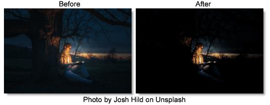

S_Hotspots
Description
Generates a hotspot image containing areas of the image brighter than a given threshold.
The S_Hotspots filter comes from the Emmy award winning Boris FX Sapphire filter set.
Category
Color.
Controls
Presets
To select a preset, pick one from the Presets window.
Blur Input
Allows smaller spots to be smoothed away before the hotspots are determined.
Threshold
Include hotspots at any image areas that are brighter than this value.
Threshold Add Color
This can be used to raise the threshold on a specific color and thereby reduce the hotspots generated on areas of the image containing that color.
Saturation
Scales the color saturation. Increase for more intense colors. Set to 0 for monochrome.
Brightness
Scales the brightness of the result.